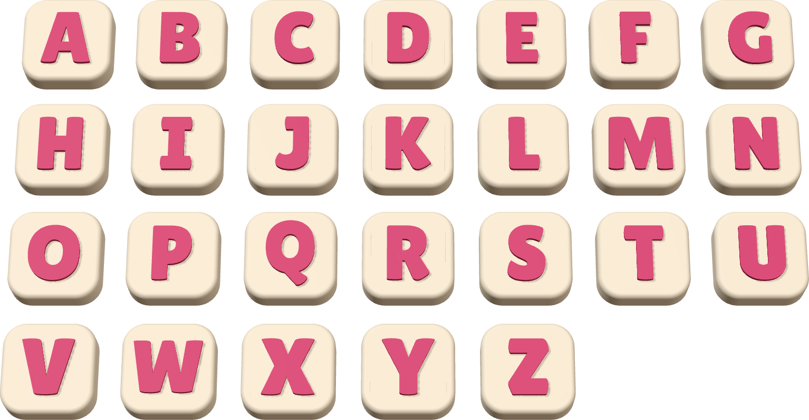
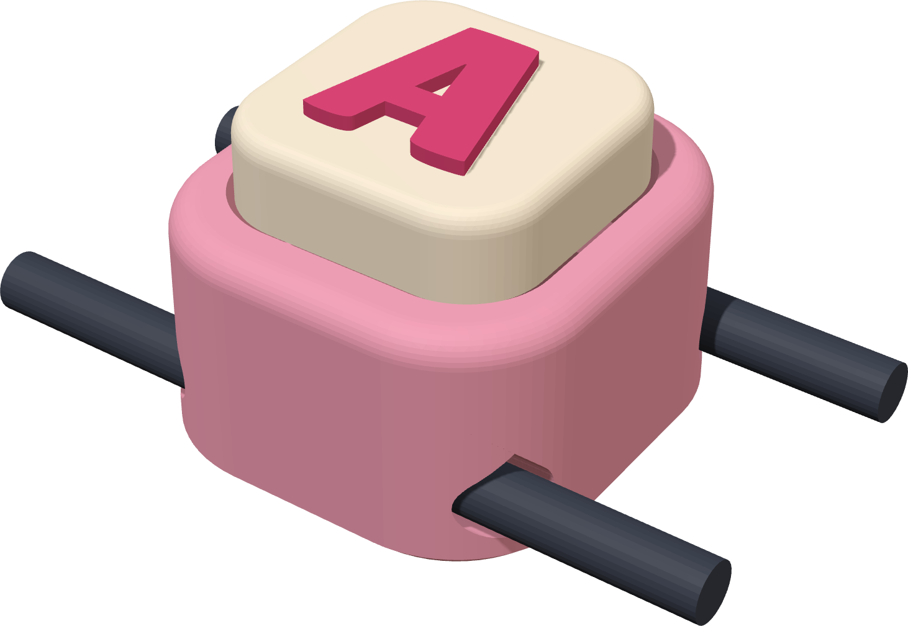
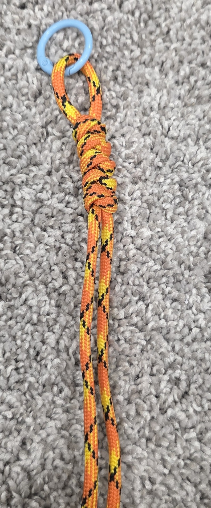
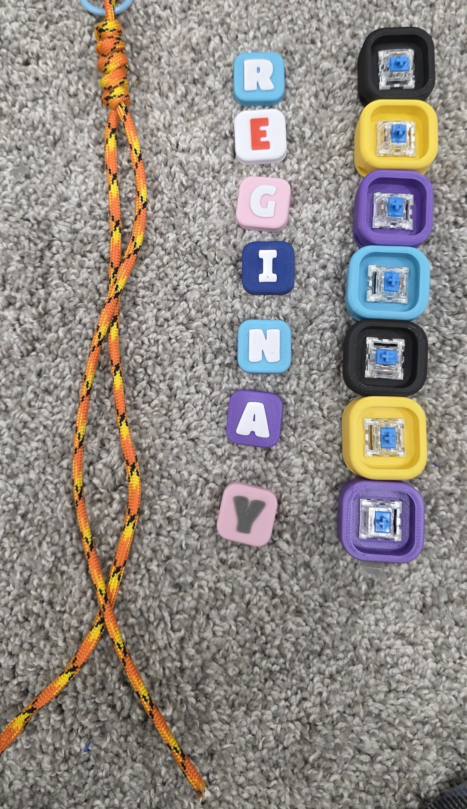

Stackable name clicker · 3D print files · commercial licence
Click It,
Stack It!
Start here: printing and stringing your name clicker keychain


What's in your download
| 3MF folder | Plates for Bambu Studio / OrcaSlicer: Keycaps-A-Z, Keycaps-0-9, Keycap-BLANK, Blocks-x10, Fit-Test. |
| STL folder | One file per keycap, one block, and the fit test, for any slicer. |
| LICENSE.txt | Your commercial licence (page 3). |
You'll also need (not included)One MX-style switch per letter (any keyboard switch with a + stem), 4 mm (550) paracord and a keyring.
SizesBlock 28 × 30 × 17 mm, two cord tunnels. Keycap 21.2 mm, letters 13 mm. Each letter adds about 28 mm to the keychain.
Stackable Name Clicker · Start Here1
Page 2 · Print
Print blocks and caps
1
Print the fit test first (Fit-Test.3mf, about 25 min): one block and one cap. Check that your paracord slides through both tunnels and that a switch and cap press in snugly.
2
Blocks: Blocks-x10.3mf prints 10 blocks in one colour (about 2 h, 58 g). Print several colours for a rainbow mix.
3
Keycaps: Keycaps-A-Z.3mf (about 1 h 45 min, 45 g) and Keycaps-0-9.3mf. Two colours with one filament change: the letter is the top 1 mm. Only need some letters? Delete the others, or copy-paste letters you need twice.
4
Different cap colours? In your slicer, change filament 1 (cap) and 2 (letter) to any colour, or print the STL caps one colour at a time.
Times and weights: Bambu Studio 2.8 estimates, Bambu Lab A1, 0.20 mm layers.
Suggested settings
| Setting | Value |
|---|
| Orientation | As the files open: blocks open side up, caps upright |
| Supports | Off. The tunnels have pointed roofs that print by themselves. |
| Layer height | 0.20 mm |
| Walls / infill | 3 walls, 15–20 % |
| Material | PLA |

One block, cap and two cords.
Stackable Name Clicker · Start Here2
Page 3 · Assemble, licence and help
Put it together
1
Fold about 60 cm of paracord in half through a keyring and tie a knot below the ring (a snake knot looks great).
2
Snap an MX switch into each block, then press a keycap onto each switch.
3
Thread one strand through each tunnel of the first letter's block. Add the rest of the name in order, then tie a knot under the last block to hold the stack tight.
Commercial licence: you may✔ Print and sell unlimited clickers, online and in person ✔ Personalise names for customers, any colours ✔ Use photos of your own prints
You may not✘ Share, resell or upload the files (STL, 3MF) or this guide ✘ Claim the design as yours ✘ Use our listing photos. One licence per shop.
Cord is tight in the tunnel?
Melt and squeeze the cut end to a point, or wrap it in tape. Your printer's flow may also make holes a little smaller: check with the fit test.
Questions? Message us on Etsy. Design rights remain with Valencia Holdings Inc.


Stackable Name Clicker · Start Here3